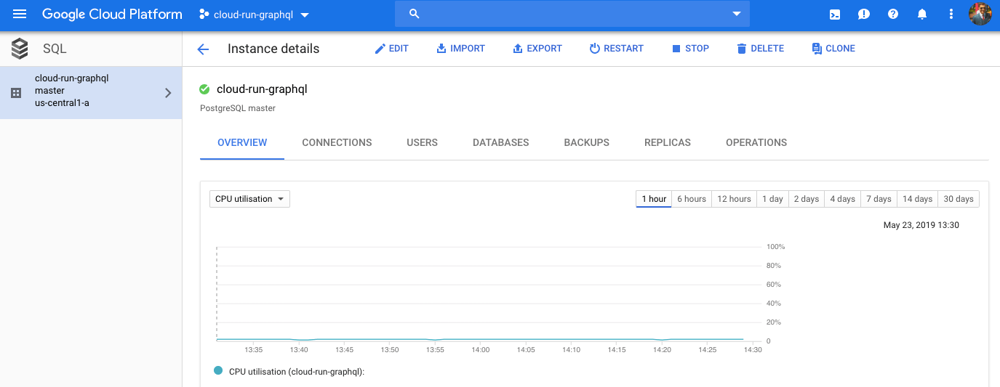
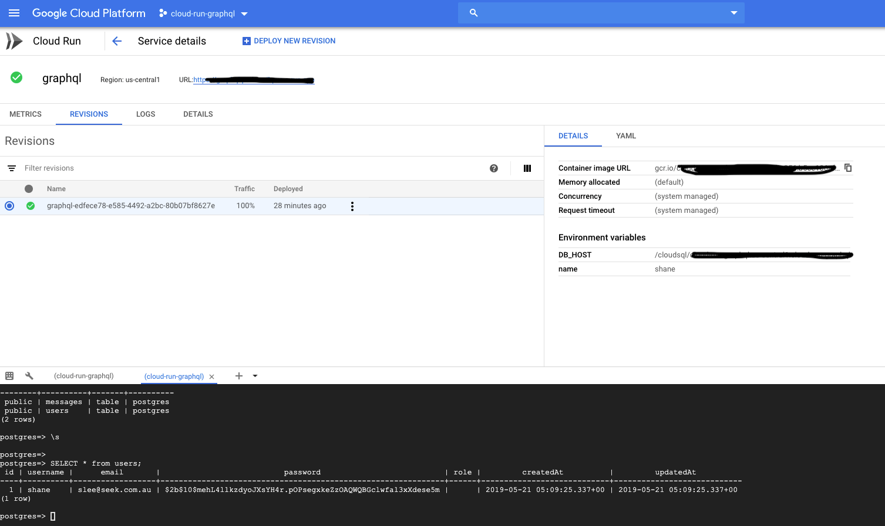
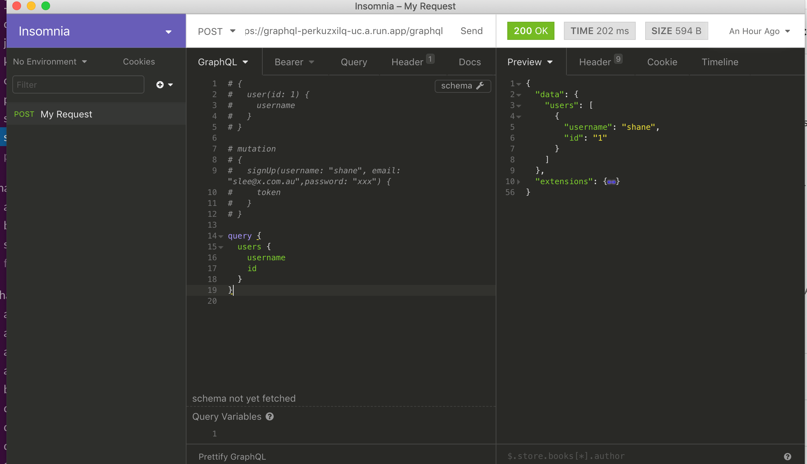

Cloud Run is a layer that Google built on top of Knative to simplify deploying serverless applications on the Google Cloud Platform.
So whats Knative??
Knative provides an open API and runtime environment that enables you to run your serverless workloads anywhere you choose: fully managed on Google Cloud, on Google Kubernetes Engine (GKE), or on your own Kubernetes cluster.
Knative can be deployed on any Kubernetes cluster. It acts as the middleware bridging the gap between core infrastructure services and developer experience.
Cloud Run is Googles own implementation of Knative.
It enables you to run stateless containers that are invocable via web requests or Cloud Pub/Sub events.
Features include:
- Fast autoscaling
- Managed
- Redundancy
- Integrated logging and monitoring
- Custom domains
- Built on knative
There are two options when it comes to using Google Cloud Run.
Flavors of Cloud Run
Currently in beta, Google Cloud Run is available as a standalone environment and within the Google Kubernetes Engine (GKE).
Developers can deploy apps to Cloud Run through the console or CLI. If there is a GKE cluster with Istio installation, apps targeting Cloud Run can be easy deployed to an existing Kubernetes cluster.
Each deployment to service creates a revision. A revision consists of a specific container image, along with environment settings such as environment variables, memory limits, or concurrency value.
Requests are automatically routed as soon as possible to the latest healthy service revision.
For more check out the video below on the differences.
Tutorial
In this tutorial, we will deploy a graphql API based on Node.js and Postgres to the Cloud Run platform.
There are two steps involved in this workflow: provisioning a cloud sql postgres database instance, and deploying code to Cloud Run. This tutorial assumes you have an active account on Google Cloud Platform with the CLI and SDK installed on your development machine.
You also need Docker Desktop to build images locally.
Actually, that's not true! You don't even need docker locally!! You can use google cloud build to run it remotely for you 🤓
Lets begin
To follow along, you can find the github project here
In a previous post, I talked about running this example on kubernetes using skaffold
Google cloud setup
First on your google cloud account you need to enable billing and cloud run API
Create your new google cloud project first and then run the following commands
gcloud components install beta #install beta components
gcloud components update #update components
gcloud config set run/region us-central1 #set cloud run region
gcloud services enable container.googleapis.com containerregistry.googleapis.com cloudbuild.googleapis.com
gcloud config set project [PROJECT_ID] #set project id
gcloud beta auth login
Step 1: create cloud sql for postgres
GraphQL APIs datasource is a postgres database. Cloud run supports cloud sql service.
gcloud sql instances create [INSTANCE_NAME] --database-version=POSTGRES_9_6 \
--tier db-f1-micro --region us-central1
#save on costs by using a shared-core instance
gcloud sql users set-password postgres no-host --instance=[INSTANCE_NAME] \
--password=[PASSWORD]
For testing purposes, I am running a micro instance.
Refer to doc for more info

Step 2: Building and Deploying a Cloud Run Service
You can find the docker file and src in the github repo
We will build the Docker image remotely and push it to Google Container Registry (GCR)
gcloud builds submit --tag gcr.io/[PROJECT-ID]/graphql #build container image
Verify the image exists in GCR
gcloud container images list
Deploy the container using cloud run and overwrite env vars to connect to the DB
#overwrite the host to connect over a unix domain socket and db password
gcloud beta run deploy --image gcr.io/[PROJECT-ID]/graphql --add-cloudsql-instances [INSTANCE-NAME] --update-env-vars DB_HOST=/cloudsql/[CONNECTION NAME],name=graphql,DATABASE_PASSWORD=[PASSWORD] #respond y to allow unauthenticated invocations.
The switch, –allow-unauthenticated, will let the service accept the traffic from the public internet. Notice that we are passing the Postgres connection string generated by cloudSQL as an environment variable. The code expects the connection string from the DBHOST environment variable.
See details of the running service by running the command below
gcloud beta run services list
Or you can view the UI console

You can verify it works locally by using Insomnia

Some sample queries can be seen below to sign in a user and get back their details
mutation
{
signUp(username: "shane", email: "slee@x.com",password: "xxx") {
token
}
}
query {
users {
username
id
}
}
Finally
Finally, delete all resources after.
Easiest way is to delete the test project
Any questions feel free to comment below.